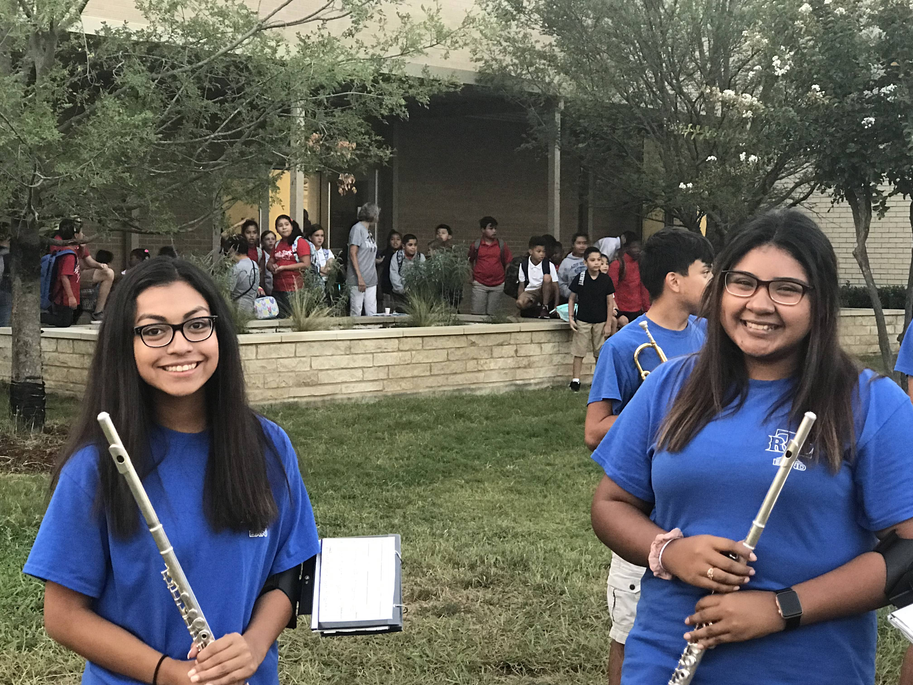
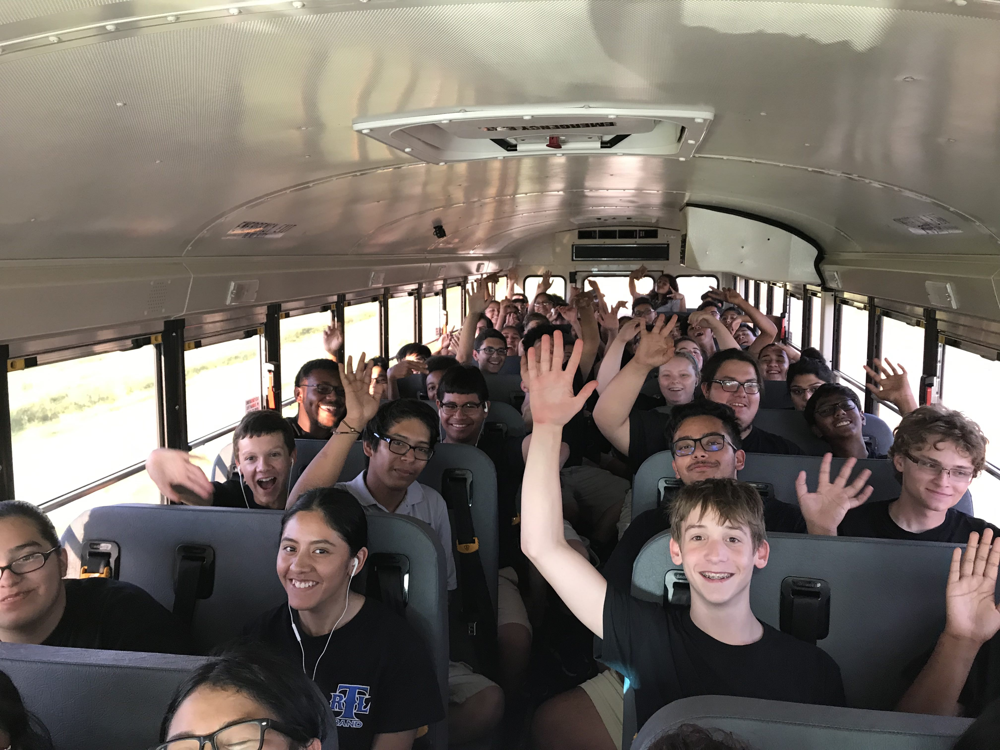
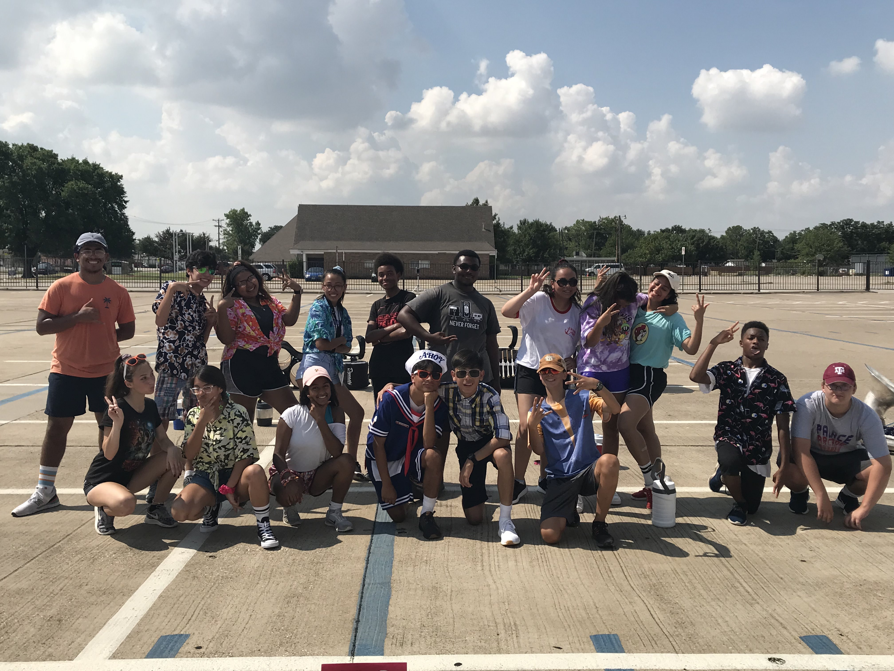
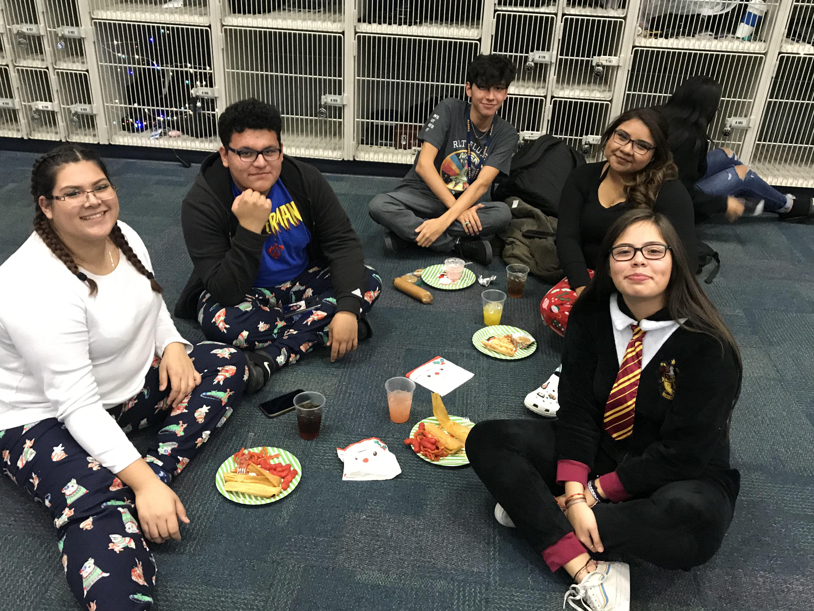

The R.L. Turner High School Band is one of the largest organizations on campus. In addition to Marching Band, the band has three concert bands, percussion ensebmles, as well as a Jazz Band and Colorguard/Winterguard. The Turner Band maintains a long tradition of excellence and continually strives for the highest standards of music eduction and performance for each of its members while continually fostering fellowship and goodwill among its members through opportuniites for personal growth and leadership.
Accompanists, Adjunct Instructors, Auditions, Clinicians, Competition Entry Fees, Leadership Training, Music, Photography, Professional Development, Solo and Ensemble, Blue Band T-Shirt and Show T-Shirt, Transportation, and Uniforms.
All information is available in CHARMS. You will learn how to access CHARMS and ensure your contact information is up to date at Band Registration Day. Become a friend on Facebook. Review the website… www.turnerband.com.
There are numerous ways to support the Turner Band – become a Band Booster Association Member, Chaperone, Donate Food/Water/Money, Drive Equipment Trucks to Standridge Rehearsals/All Football Games/Competitions, Fundraise, Move Equipment On and Off the Field for Football Games and Competitions, Size Uniforms, etc. All volunteer opportunities are available in CHARMS. Please let us know you’re available to help by signing up in CHARMS.
At least 15 minutes prior to the start of rehearsal to fill water jug, gather instrument and music, and go to practice area in parking lot. Your child’s attendance is needed at every rehearsal.
Personal Water Jug (32oz or larger), Hat, Sunglasses, Cool Summer Clothing (school appropriate), Bug Spray, Sunscreen, Flip Folder, and Music Lyre.
The water your child drinks the night before is what gets him/her through the next day. Students should drink water throughout the day/night and at each break in rehearsal. It is especially important to drink throughout the day when school begins. Your child should eat before rehearsal. However, do not eat dairy products. Students tend to become nauseated during rehearsal after they have eaten dairy products. Eggs can also have the same affect.
Blue Turner Band Shirt or Show Shirt (director will specify), Khaki Shorts, White Athletic Socks, and appropriate Athletic Footwear for marching. Shirts provided. All other items are the responsibility of the student.
Marching Bibs and Jacket, Marching Shoes, Black Socks, Blue Turner Band Shirt or Show Shirt, Black Compression Shorts. Marching bibs, jacket, and shirts provided. All other items are the responsibility of the student.
Students must provide their own transportation to and from Standridge Stadium for rehearsals and football games.
Students take a bus to away games (not at Standridge Stadium) and marching competitions.
Yes, you are invited to attend every performance. Students enjoy seeing “blue” in the audience. There is a fee for football games and most marching competitions. Discounted tickets for football games are available in the main office at school. However, if you are a chaperone, you will attend free. At football games, the band plays music in the stands during the game and performs their marching show during halftime. However, during the Homecoming game, the band performs their marching show before the game.
Yes, your student will need to eat before football games. Your student has an option to purchase dinner provided by the Band Booster Association at school to eat before an AWAY game.
No, your student does not need to bring food to competitions. Snacks and meals are provided by the Turner Band Booster Association.
An alternate is a student that has the same marching spot as another student. The directors will determine every week which student will march that week. Alternates are expected to attend every rehearsal, football game, and competition.
The Directors make every effort to ensure private music teachers are available to give lessons to students during the school day. Partial scholarships are available through the Turner Band Booster Association to help pay for private lessons.
There are grade check dates throughout the year to determine if a student is eligible to perform at football games and competitions. If a student is failing any class, he/she will not be able to perform for a period of time. There is a window of time to regain eligibility. If a student is ineligible, he/she is expected to attend rehearsals, but will not travel with the band to any football games or competitions until they regain eligibility.
Upperclassmen band members are paired with underclassmen band members to serve as mentors. It is traditional for “siblings” to exchange small gifts, i.e. candy, at the first football game and mums at Homecoming.
Men – White Tuxedo Shirt, Black Socks, Black Dress Shoes, Black Bow Tie, Black Tux. Tux provided. All other items are the responsibility of the student. Women – Black Hosiery, Black Dress Shoes, Black Dress. Dress provided. All other items are the responsibility of the student.
Yes. Each spring, usually in April, the band students take a trip. The cost of the trip is the student’s responsibility. However, a fundraising opportunity may be available to help offset the cost of the trip.
Yes. There are several fundraisers throughout the year, i.e. Bake Sale, Car Washes, Chocolate Sales, Garage Sale, Goodsearch, Kroger and Tom Thumb Community Partners, Music and Arts Instrument Drives, Restaurant Spirit Nights, Scholarship Dinner and Silent Auction, Turner Staff Luncheons.